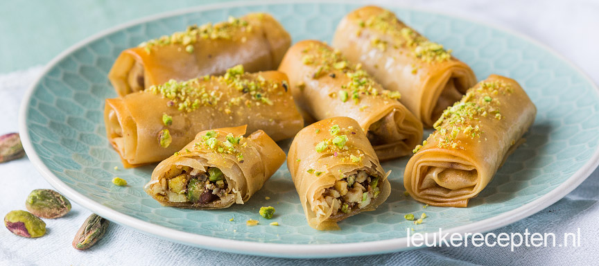

Baklava rolletjes
Deze knapperige rolletjes met noten zijn leuk om te serveren als toetje of als zoet hapje bij de high tea
Ingrediënten
- 50 gr pistache nootjes + 1 eetlepel
- 50 gr amandel
- 1 eetlepel bruine basterdsuiker
- 25 gr boter (gesmolten)
- 5 vellen filodeeg (ontdooid)
- boter om in te smeren
- 2 eetlepels suiker
- 2 el ketjap manis
- snufje zout en peper
- lekker met gebakken uitjes
Materialen
- Bakplaat met bakpapier
- Keukenmachine of hakmolen
Bereidingswijze
- Hak de amandelen en 50 gr pistache fijn in een keukenmachine of hakmolen. Roer de basterdsuiker er door en 25 gr gesmolten boter. Neem een filodeegvel en smeer deze in met een beetje boter. Bewaar de andere vellen goed afgedekt, bijvoorbeeld onder een iets vochtige theedoek.
- Verwarm de oven op 180 graden. Snijd het ingesmeerde vel filodeeg doormidden in twee langwerpige stukken. Schep een beetje van het notenmengsel aan het begin van de twee stukken filodeeg. Vouw de zijkanten er iets overheen en rol hem daarna op. Zorg dat alle zijdes goed gesloten zijn. Kwast de rolletjes goed in met boter. Bak de baklava rolletjes in 15 min krokant.
- Verwarm ondertussen een scheutje water in een pannetje en los hier 2 eetlepels suiker hierin op. Besprenkel of bestrijk de baklava rolletjes met de suikersiroop. Hak de eetlepel pistachenootjes fijn en bestrooi de bovenzijde van de rolletjes hiermee.
- Serveer ca 3 a 4 stuks per persoon als toetje. Ook lekker met een bolletje ijs.
